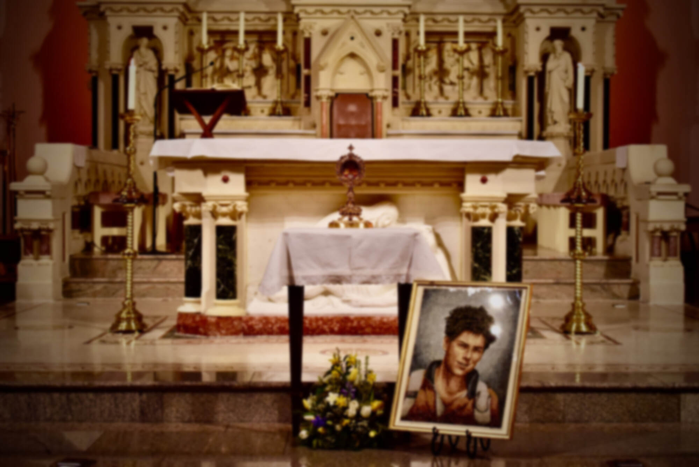
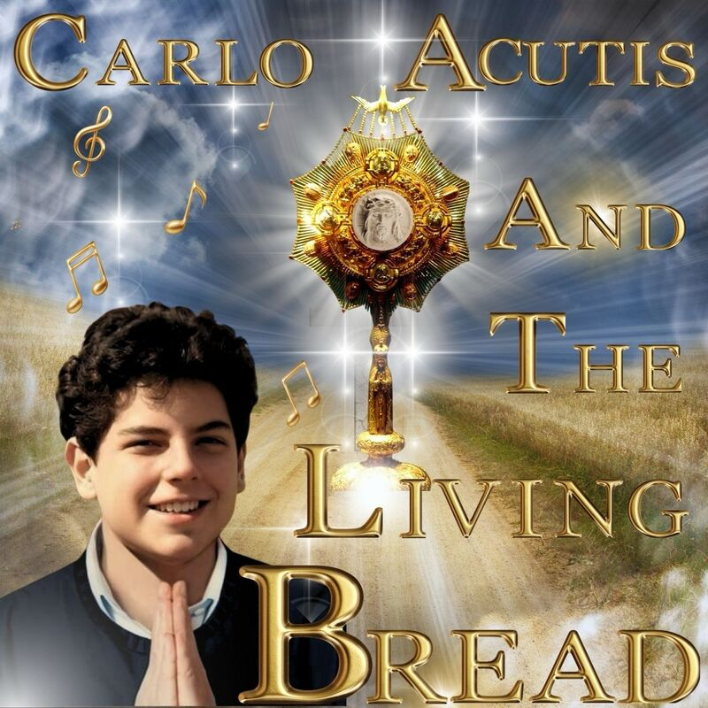
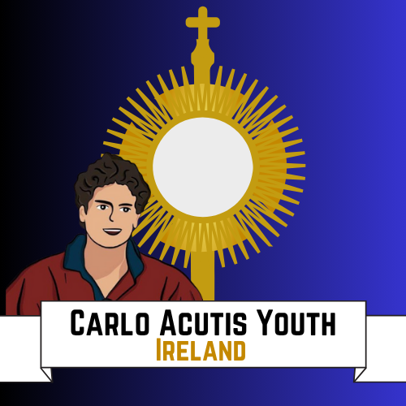

Relic Visits
In the past year, the primary relic of Carlo Acutis has made a number of visits to dioceses in Ireland from Assisi. Interested in finding out more about a relic visit for your parish?
Find out more
Relic visits, school workshops and resources — sharing the story of Ireland’s young patron of the internet with as many people as we can.
We are a family who has been deeply moved and inspired by the life of Carlo Acutis. Working with our friends and directly with the Archbishop of Assisi and Bishops of Ireland, we want to share Carlo’s story with as many people as we can.
What we do
In the past year, the primary relic of Carlo Acutis has made a number of visits to dioceses in Ireland from Assisi. Interested in finding out more about a relic visit for your parish?
Find out more
We want to support others to spread awareness of Carlo Acutis in their parish and everyday life. We have a number of resources and supports to help.
Find out more
Want to organise a Carlo Acutis workshop in your school or parish? We are more than happy to help. We also organise outreach events as part of our Carlo Acutis Youth Ireland.
Find out moreWatch
Prayer requests
Submit it here to be prayed for with the relic of Carlo.
If you would like to receive newsletters on Carlo Acutis Ireland and information about events, include your email address. We also organise monthly online prayer nights where we pray for all intentions received that month with the relic of Carlo Acutis.
Gallery
Get in touch
Or follow us
